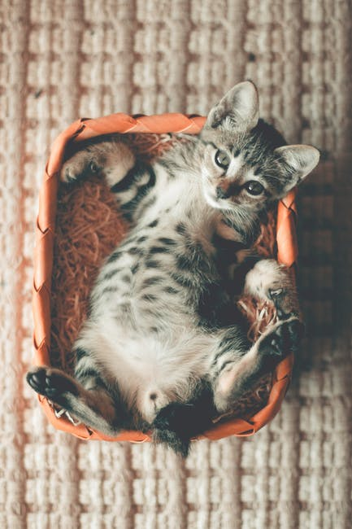

Matthew Hird
I can is catz! I haz little footie pawz. See? They is so smallz.
Stuffz I can Likez
I like the stuffs. Herez the stuffz I liakz:
I can is catz! I haz little footie pawz. See? They is so smallz.
I like the stuffs. Herez the stuffz I liakz: